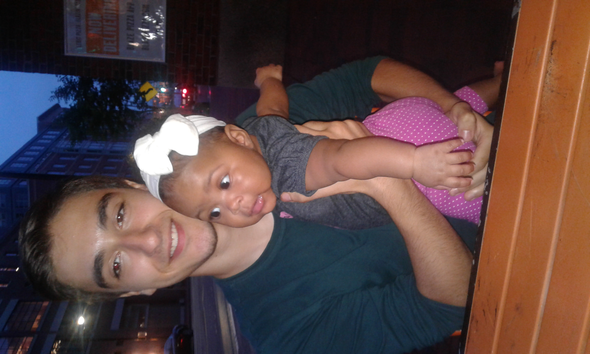

Household Chores, Medfield, MA
Took out trash, washed dishes and cleaned and organized bedroom.

Organized Emails, Framingham, MA
Organized and deleted emails for a family friend
Babysitting, Medfield, MA
Took care of neighbors baby free of charge for a couple of hours many times.

Education
Medfield High School, Medfield, MA
2019-2023
Took many honors classes for science and math, enjoyed projects focused on business and software engineering.
Boston Leadership Institute, Wellesley, MA— Summer program (Finance)
August 2019
Projects centered around bond valuation, stock valuation, dividends, developing forecasts, spotting trends, options/pricing, cash flow, seasonality and trend.
Boston Leadership Institute, Wellesley, MA— Summer program (Contagion)
August 2018
Projects centered around nature of pathogens, their transmission, and their prevention and treatment.
Skills